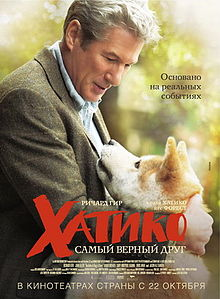

| 
|
Хатико: Самый верный друг
«Хатико: Самый верный друг» (англ. Hachi: A Dog’s Tale) — художественный фильм Лассе Халльстрёма, основанный на реальной истории Хатико — японского пса породы акита-ину, который в течение девяти лет каждый день в одно и то же время приходил на вокзал встречать умершего хозяина. Фильм является ремейком японского фильма 1987 года. Сценарий фильма написал Стивен Линдси. Главные роли в фильме исполнили Ричард Гир, Джоан Аллен и Сара Ремер. Фильм был выпущен 8 августа 2009 года в Японии. |